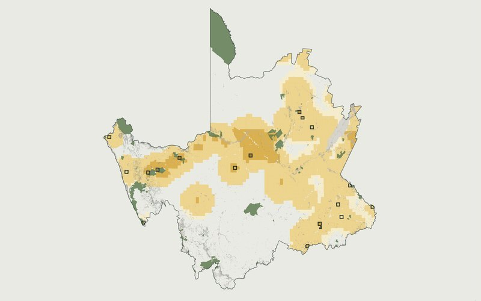

Models
Open, reproducible geospatial models for energy planning. Each one is a set of Jupyter notebooks on a small Python package, with its assumptions in one file, a record of every run, and checks that must pass before anything is published. They run in plain Jupyter or inside QGIS.
Open Energy GeoHub models
Three models that ask where energy plans meet the ground: where generation can connect, where climate adaptation will add demand, and where electrification is running ahead of or behind the plan.
-

Model · Solar investment readinessGeoReady
Where can utility-scale solar connect in the Northern Cape? Eligible land, capacity, indicative cost, NTCSA grid headroom and a readiness score for every zone, under three grid scenarios, with maps and data to download.
Explore the model (preview) -
Model · Adaptation energy demand
GeoAdapt
How much extra electricity might cooling need as the climate warms? Household cooling demand under climate and adaptation scenarios, starting in one district.
In development -
Model · Plan versus observation
EnergyAccess Monitor
Where is electrification progressing differently from the plan? Planned and observed access compared at a matching scale, with the evidence for each.
In development